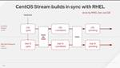
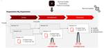
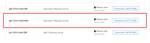
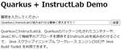

赤帽エンジニアブログ
https://rheb.hatenablog.com/
レッドハット株式会社のエンジニアがオープンソーステクノロジーについての最新の情報を発信するブログ。LinuxからOpenStack、OpenShift、Ansibleなどの情報を発信しています。
フィード

Composingが公開されたCentOS Stream 10をのぞいてみた
赤帽エンジニアブログ
こんにちは。ソリューションアーキテクトの橋本です。 2024/06/30をもって、Red Hat Enterprise Linux 7(RHEL7)のEnd of Life(Extend Lifecycle Support 通称ELS提供中)、及びCentOS 7が同じくEnd of Lifeを迎えました。 一方で、次のRHELのメジャーリリースであるRHEL10の開発が着々と進行しています。RHEL8以降、RHELは3年に1度メジャーリリースを行うようになりまして、RHEL8は2019年、現在最新のRHEL9は2022年のリリースです。 RHEL10はおそらく、その3年後、つまり来年2025…
25分前

RHELのパッチ適用を Ansible + Satelliteで自動化しよう
赤帽エンジニアブログ
こんにちは。Red Hat ソリューションアーキテクトの清水です。RHEL7のELSも開始となり、RHELのライフサイクル管理の重要性に改めて認識された方も多いのではないでしょうか？さて、本ブログ記事では、RHELのパッチ適用をAnsibleとSatelliteを使って自動化する方法についてご紹介していきたいと思います。 実は、RHELのパッチ適用を含むライフサイクル管理と言うと、幾つかの製品が登場してきて使い方も様々ですので、ちょっとわかりにくかったりします。代表的な製品としては、以下のようなものが挙げられます。 Red Hat Insights Red Hat Satellite Red …
3時間前

ゼロからはじめるOpenShift Virtualization（1）OpenShiftのインストール 3
3
赤帽エンジニアブログ
Red Hatでソリューションアーキテクトをしている田中司恩(@tnk4on)です。 この連載はvSphere環境上にOpenShift Container Platform（以下、OpenShift）およびOpenShift Virtualizationの環境構築を解説するシリーズです。 可能な限り最小構成での検証環境の構築を目指し、1台のESXi上にOpenShiftをインストールしてネスト仮想環境でOpenShift Virtualizationを実行する方法を解説します。 また環境の構築後はvSphere上の仮想マシンを移行ツール（Migration Toolkit for Virtu…
5時間前
既存のJakarta EE アプリケーション(WAR)を JBoss EAP でコンテナ化
赤帽エンジニアブログ
Red Hat で Java 関連の製品を担当している伊藤ちひろです。 この記事では、すでにビルドされた WAR ファイルを用いて、JBoss EAP 8.0 のコンテナを作成する方法を紹介します。 みなさんのシステムには、WARファイルをビルドする手順がすでにあるでしょう。 そのような場合、その環境を生かしてJakarta EEアプリケーションをコンテナ化できます。 Jakrta EEアプリケーションのコンテナ化するに当たり以下のような不安があるかもしれません。 難しいツールを使わないといけないかもしれない CI/CD を構築しないといけない 実際はそのようなことはなく、Jakarta EE…
4日前

JBoss EAP 8.0で開発を始めてみよう(1) 1
赤帽エンジニアブログ
こんにちは。Red Hatのソリューションアーキテクトの瀬戸です。 今回は、Windows上でJBoss Enterprise Application Platform 8.0(以下EAP)を使用して開発を始めるまでを紹介したいと思います。 Windows上でJava言語を書いたことがあり、手元でJavaを実行することができ、コマンドプロンプトの概念を理解し、コマンドラインツールについては問題なく使用できることを前提としています。 この記事では開発ツールをインストールし、JBoss EAPサーバーを動かして、データソースの設定を行い、データソースの設定を行うところまでを行います。 実際にコード…
4日前
OpenShiftでアプリケーションを開発してみよう
赤帽エンジニアブログ
Red Hatの小島です。 OpenShift Container Platform(以下、OpenShiftと記述)にはアプリケーションの開発支援機能が備わっており、Gitリポジトリにあるアプリケーションのソースコードをもとに、OpenShiftでのコンテナアプリケーションのビルドとデプロイ、および外部公開用のURL作成を自動化することができます。そうした機能の具体的な利用例を記載したワークショップコンテンツがありますので、本記事ではそれらのコンテンツをご紹介していきます。 サンプルアプリケーションのデプロイ Web IDEを利用した開発 Amazon Bedrockアプリケーションの実行 …
10日前

QuarkusとGraniteを使ったAIアプリ開発
赤帽エンジニアブログ
Red Hat で Quarkus を担当している伊藤ちひろです。 この記事では、PC 上で LLM に接続するアプリケーションの開発の流れを紹介します。 今回は、LLM としてGraniteを使用し、そこへアクセスするアプリケーションは Quarkus を使用して開発します。 このGraniteのモデルはInstructLabでチューニングされたものを使用しています。 Graniteのモデルは Podman Desktop 上に構築しています。 最終的に完成するアプリはこちらです。 質問すると、AIっぽい返答がもらえます。 Podman の AI 拡張機能をインストール まずは、Podman…
11日前

PodmanではじめるRed Hatのミドルウェア製品：Keycloak（2）
赤帽エンジニアブログ
Red Hatでソリューションアーキテクトをしている田中司恩(@tnk4on)です。 前回記事の続きになります。前回記事ではRed Hat build of Keycloak（RHBK）のサポート構成やPodmanを使ったテスト実行について紹介しました。 今回はPodmanで実行したコンテナレジストリのユーザー認証基盤としてRed Hat build of Keycloakを使う方法を紹介します。 （前回記事はこちら） rheb.hatenablog.com -目次- Distribution Registryとは Distribution Registryのコンテナイメージ Red Hat …
18日前
PodmanではじめるRed Hatのミドルウェア製品：Keycloak
赤帽エンジニアブログ
Red Hatでソリューションアーキテクトをしている田中司恩(@tnk4on)です。 PodmanではじめるRed Hatのミドルウェア製品シリーズ、今回取り上げる製品は「Red Hat build of Keycloak（RHBK）」です。 （追記：続きの記事を書きました。合わせてお読みください） rheb.hatenablog.com -目次- Red HatがサポートするRed Hat build of Keycloakの構成 Red Hat build of Keycloakのサポート構成 Red Hat build of Keycloakのサポートされない構成 Red Hat bui…
19日前
PodmanではじめるRed Hatのミドルウェア製品：OpenJDK（2）
赤帽エンジニアブログ
Red Hatでソリューションアーキテクトをしている田中司恩(@tnk4on)です。 前回記事の続きになります。前回記事ではOpenJDKのコンテナイメージでjarファイルが実行される仕組みなどを深掘りしました。 今回はOpenJDKのコンテナイメージのサイズの確認やコンテナイメージを自作した場合との比較などを行います。 （前回記事はこちら） rheb.hatenablog.com -目次- OpenJDKのコンテナイメージとベースイメージとの差分を確認する OpenJDK入りの自作コンテナイメージを作成する UBI-microを使ってOpenJDKのコンテナイメージを作成する まとめ Ope…
20日前
PodmanではじめるRed Hatのミドルウェア製品：OpenJDK
赤帽エンジニアブログ
Red Hatでソリューションアーキテクトをしている田中司恩(@tnk4on)です。 Red Hatの製品にはミドルウェア製品が多数あるのですが、数も種類も多くて細かい機能までは把握しきれていません。 個人の観点ではこれまでIT業界の仕事はインフラ畑でやってきたのでミドルウェアについて深く触れることもありませんでした。 そこで、Podmanとコンテナの力を借りて、Red Hatのミドルウェアと仲良くなろうというのがこの企画の趣旨です。 今回はOpenJDKについて深堀していきたいと思います。 （追記：続きの記事を書きました。合わせてお読みください） rheb.hatenablog.com -目…
21日前
転ばぬ先の...パッチ適用？ IT サービス稼働率の最大化と RHEL のパッチ管理
赤帽エンジニアブログ
皆さんこんにちは、Red Hat の岡野です。 今回は、運用面から見たシステム稼働率の最大化と RHEL のパッチ適用について考えてみたいと思います。実は最近、セキュリティに対する意識の高まりを背景に、『RHEL のパッチ管理をやりたいんだけど』という問い合わせを沢山いただくようになりました。ただその一方で、既にサポート外となっている古いバージョンを継続利用していて不具合が発生し、表現はちょっとよくないですが、営業経由で『泣きの依頼』が来るようなことも、残念ながら発生しています。 そんな中、社内にあった古い資料の中にこんな文言を見つけました。 " 85% of critical issues …
1ヶ月前
Quarkusに統合された JDK Flight Recorder
赤帽エンジニアブログ
Red Hat で Java や Quarkus を担当している伊藤ちひろです。 今回は、Quarkus で将来的に使えるようになる新機能を紹介します。 QuarkusはJDK Flight Recorderをquarkus-jfrとして統合しました。 JFRは、さまざまな情報をイベントとして記録します。 この統合により、各スレッドで発生したイベントを時系列に見られます。 この図では、Quarkusの処理の中核であるvert.x-eventloop-threadがいつ何を処理しているのかを表しています。 スレッド名右側の四角は、左から右に時間が流れています。 緑はスレッドに何もイベントがありま…
1ヶ月前
PodmanでRosettaを使う【Podman v5.1】
赤帽エンジニアブログ
Red Hatでソリューションアーキテクトをしている田中司恩(@tnk4on)です。 Podman v5.1.0がリリースされました！ github.com リリースノートの先頭にあるRosettaのサポートは私がPull Requestを書いて機能を実装したものです。 github.com 本記事ではこの「PodmanのRosettaのサポート」について紹介します。 （※本文の初出は執筆中のPodman Advanced Pod-02からの先出しで、そこから内容を抜粋したものとなります。） （2024年6月28日、追記）Podman Desktop v1.11でGUIからRosettaの設定…
1ヶ月前
RHEL, OpenShiftのFIPS準拠モード
赤帽エンジニアブログ
Red Hatの織です。RHELとOpenShiftをFIPS準拠モードについて解説する記事... に見せかけて、Red HatがGoアプリケーションをFIPS対応するためにGo言語ツールチェインを改造していることについて調べた話です。 zenn.dev
1ヶ月前
Debezium JDBC Sink Connector を使ってみる
赤帽エンジニアブログ
レッドハットのソリューションアーキテクトの森です。 Red Hat build of Debezium 2.5.4 が先日リリースされました。 Debezium を使うと、データベース内のデータやスキーマの変更をチェンジイベントとして取得し、AMQ Streams(Apache Kafka)のトピックに格納し、他のターゲットシステムにニアリアルタイムで変更内容を連携する事ができます。 access.redhat.com 今回の2.5.4リリースでは、今までテクニカルプレビューだった、JDBC Sink Connector がGAになりました。 この JDBC Sink Connector は、…
1ヶ月前
Podman AI Labを使用してローカルでLLMを動かしてみる
赤帽エンジニアブログ
ソリューションアーキテクトの瀬戸です。 左を見ても右を見てもAIと言われている今日この頃、ChatGPTなどのサービスを動かしている方々がほとんどではないかと思います。 その中でLLMは別にクラウドじゃないと動かないわけではなく、ローカルで動かすことも可能なのですが、Pythonのインストールが難しそうとかの理由で避けている人もいるのではないかと思います。 Podman AI Labを使用する事で簡単にローカルでLLMを動作させて、チャットのやり取りを楽しむことができるので、ちょっとやってみましょう。 注意: この記事は管理者権限を持ったx64 Windows 11 Professionalと…
2ヶ月前
Event-Driven Ansible + Zabbix で実現する障害対応の自動化
赤帽エンジニアブログ
皆様はEvent-Driven Ansible(以下EDA)をご存知でしょうか？通常のAnsibleでは人がPlaybookをコマンドラインやAutomation Controllerから実行します。一方で、EDAでは他のソフトウェア（監視システム等）からメッセージを受取り、そのメッセージの内容に応じて決められたジョブテンプレート・ワークフローを実行するというものになります。 EDAに関しての詳細は以下の記事をご参照ください。 Event-Driven Ansible の始め方 Event-Driven Ansible と IBM Turbonomic / Instana の連携 Ansibl…
2ヶ月前
JBoss EAP 8.0 が OpenShift上へのデプロイをいかに簡単にするか
赤帽エンジニアブログ
Red Hat のソリューションアーキテクトの瀬戸です。 この記事はRed Hat Developerのブログ記事How JBoss EAP 8.0 makes deployment on OpenShift easier | Red Hat Developerを許可をうけて翻訳したものです。 最近リリースされたRed Hat JBoss Enterprise Application Platform (EAP) 8.0では、 Red Hat OpenShift上の JBoss EAP アプリケーションイメージのプロビジョニングと設定の方法に変更が導入されました。JBoss EAP Maven…
2ヶ月前
Image mode for Red Hat Enterprise Linuxの中身を見てみる
赤帽エンジニアブログ
Red Hatの織です。Red Hat Summit 2024で発表されたImage mode for Red Hat Enterprise Linuxの仕組みについて調べた内容を、下記にまとめました。 zenn.dev
2ヶ月前
【令和6年最新版】JBoss EAP 7.4からJBoss EAP 8.0への移行
赤帽エンジニアブログ
画像提供：もりわかさん OpenShift SSA の瀬戸です。 JBoss EAP 8がリリースされてから4ヶ月がたちました。8.0.1パッチも提供され、そろそろ移行をお考えの方もいらっしゃるのではないでしょうか。 以前、JBoss EAP 7.x から JBoss EAP 8-Beta への移行方法という翻訳記事でベータバージョンでの移行方法を紹介しましたが、1年以上の時間が経ち、状況が変わってきてしまっているのであらためて移行方法をまとめたいと思います。 この時に使用したMigration Toolkit for Runtimes(以下MTR)の廃止が決まっており、更新がされなくなってし…
2ヶ月前
遅いシステムはエネルギー効率が良いかも？RHELを使って測定してみよう！
赤帽エンジニアブログ
こんにちは、レッドハットサポートのクリスです。この記事の英語版があります。 前回の記事の続きになります。今回も、システム２台があります： 測定用の制御システム 消費電力を測定しながらワークロードを実行するシスU(System Under Test, SUT) SUTはpmcdとpmda-denkiを実行し、測定データを提供する。SUTはpmcdとpmda-denkiを実行してメトリクデータを提供し、制御システムはPCPを実行してデータを収集し、後で計算するためにアーカイブファイルに保存します。Ansible playbookを使って、両方のシステムに必要なパッケージをインストールする。 このセ…
2ヶ月前
Red Hat Buld of Apache Camel 4 向け開発ツール(VSCode Extension Pack for Apache Camel by Red Hat)
赤帽エンジニアブログ
Red Hat の古市です。 今後主力製品としてサポートされる Red Hat Build of Apache Camel 4.x 向け開発ツールを、こちらのブログでご紹介しています。ツールの概要と簡単な使い方、最後にフィードバック方法について順に記載していますので、ぜひご覧ください。 https://playintegration.blogspot.com/2024/04/red-hat-buld-of-apache-camel-4-vscode.html
2ヶ月前
crypto-policiesは徐々に拡張されている話
赤帽エンジニアブログ
RHEL 8ではcrypto-policiesが重要な役割を担っています。この記事では、crypto-policiesの基本概念とその進化について解説します。RHEL 8.0からの初期設定から始まり、RHEL 8.2で導入されたポリシー言語によるカスタマイズ、そしてRHEL 8.5で可能となった特定のアプリケーション向けのスコープ指定まで、段階的な拡張を紹介しています。RHEL 8とRHEL 9でのSSHサーバの実装違いも取り上げます。
3ヶ月前
OpenShiftの再現環境作成のコツ - 第3回 ランタイムイメージの利用
赤帽エンジニアブログ
OpenShiftの再現環境作成のコツ - 第3回 ランタイムイメージの利用 こんにちは、Red Hat Partner Technical Account Managerのイアンです。 シリーズの前回では、ローカルのソースコードをビルドし、OpenShiftにデプロイする方法を紹介しました。 しかし、ビルダーイメージをそのまま使っていましたので、ビルド用のツール（Maven、s2i）が残って、イメージのサイズが大きくなりました。 当記事では、ビルダーイメージとランタイムイメージの両方を使って、アプリのビルドとデプロイを行います。 当シリーズ OpenShiftの再現環境作成のコツ - 第1回…
3ヶ月前
OpenShiftの再現環境作成のコツ - 第2回 一からビルド
赤帽エンジニアブログ
OpenShiftの再現環境作成のコツ - 第2回 こんにちは、Red Hat Partner Technical Account Managerのイアンです。 シリーズの前回では、JBoss EAP Quickstartsを使ってOpenShiftへのサンプルアプリのデプロイと修正方法を説明しました。 また、JBoss EAP OpenShift Templatesも使って、アプリに必要なリソースをすぐ作成できました。 当記事では、テンプレートを使わずにローカルのソースコードのOpenShiftへのデプロイ方法を紹介します。 当シリーズ OpenShiftの再現環境作成のコツ - 第1回 Q…
3ヶ月前
OpenShiftの再現環境作成のコツ - 第1回 Quickstarts紹介
赤帽エンジニアブログ
こんにちは、Red Hat Partner Technical Account Managerのイアンです。 サポートケース対応の中では、お客様が遭遇している事象を再現するためのサンプルアプリを自前で作ることが多いです。 ミドルウェア単体の問題であれば、Red Hat Customer Portalから対象製品をダウンロードし、すぐアプリをデプロイできます。 でも、お客様はOpenShiftの環境を使っているときはどうしましょうか？ 当シリーズでは、ローカルPC下のサンプルアプリをそのまま使って、OpenShiftに手軽にデプロイする方法を紹介します。 当シリーズ OpenShiftの再現環境…
3ヶ月前
Migration Toolkit for Applicationsを使って組織のシステムのクラウドへの移行を促進させる 3. 使用(アセスメント)編
赤帽エンジニアブログ
OpenShift AppDev SSAの瀬戸です。 Migration Toolkit for Applications(以下MTA)という製品をご存知でしょうか？Red Hatが出している静的解析ツールで、古いバージョンのJBoss EAPやOpenJDKなどのミドルウェアで動いているアプリケーションを最新のミドルウェア上で動作させるために必要な修正を洗い出してくれます。 実は、それだけではなく、組織のアプリケーションのモダナイゼーションのサポートもしてくれます。この記事では何回かにわけて、どういった機能があるのかと実際の使い方をご紹介したいと思います。 ちなみに、MTAは無償でお使いいた…
3ヶ月前
Migration Toolkit for Applicationsを使って組織のシステムのクラウドへの移行を促進させる 2.インストール編
赤帽エンジニアブログ
OpenShift AppDev SSAの瀬戸です。 Migration Toolkit for Applications(以下MTA)という製品をご存知でしょうか？Red Hatが出している静的解析ツールで、古いバージョンのJBoss EAPやOpenJDKなどのミドルウェアで動いているアプリケーションを最新のミドルウェア上で動作させるために必要な修正を洗い出してくれます。 実は、それだけではなく、組織のアプリケーションのモダナイゼーションのサポートもしてくれます。この記事では3回にわけて、どういった機能があるのかから実際の使い方をご紹介したいと思います。 ちなみに、MTAは無償でお使いいた…
3ヶ月前
Migration Toolkit for Applicationsを使って組織のシステムのクラウドへの移行を促進させる 1.概要編
赤帽エンジニアブログ
OpenShift AppDev SSAの瀬戸です。 Migration Toolkit for Applications(以下MTA)という製品をご存知でしょうか？Red Hatが出している静的解析ツールで、古いバージョンのJBoss EAPやOpenJDKなどのミドルウェアで動いているアプリケーションを最新のミドルウェア上で動作させるために必要な修正を洗い出してくれます。 実は、それだけではなく、組織のアプリケーションのモダナイゼーションのサポートもしてくれます。この記事では3回にわけて、どういった機能があるのかから実際の使い方をご紹介したいと思います。 ちなみに、MTAは無償でお使いいた…
3ヶ月前